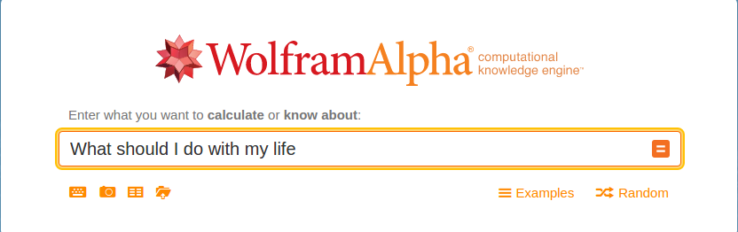
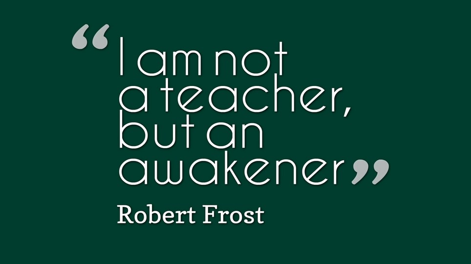

March 18th, 2016
When I grow up, I want to be...

Have you ever had one of those periods of time where you question what you've done up until now? Something along the lines of "Wow, Person X has done all this and I've barely gotten out of bed before 12 consistently", or "I really need to do Y because I need experience / social interaction / whatever excuse you made."
I recently went through my own little dilemma along those lines. I consistently asked myself whether I was truly going down the "right path." I often spent nights constantly asking myself whether I was truly enjoying what I was doing, whether I ought to be doing other things, etc. It was awful: life felt less blissful and more of a chore. The little voice in my head would always perk up: "Are you enjoying yourself, Haaris?" I couldn't think straight, as I was so concerned with this constant barrage of questions. Thankfully, through the help of peers and a lot of self-exploration, I've found the answers to the questions that circulated through my brain.
What's the right path? I wish someone told me sooner. In my mind at the time, the right path was doing what really made you feel happy, something that kept you sane and intact. It was an outlet, an escape from the pressures of the outside. For some, that could be writing or drawing; for others, playing games or working out.
This sounds like such a peaceful definition, some serene truth I was ready to accept. As it turns out, this wasn't the case: doing what you love, while necessary for a successful, tolerable life, isn't the "right path," not for me at least.
What the hell did you just say?
Blasphemous, I hear you say. In the end, we should pursue happiness, right? It's nonsense to say that pursuing happiness is not the right path. Perhaps it is and I still have some self-searching to do. But I've arrived at my own answer: There is no "true path" to be striving towards.
Yes, we all "should" be striving for either a strong collective impact or individual happiness or whatever we so choose, but does anyone truly know what they want out of life?
Yes, some have passions and dreams, fueled by past experiences or whatever. But can we honestly discover what we truly ought to be doing -- can we really look into ourselves and find our purpose -- within the small, finite time of our lives? I'd argue not: we can only do so much, and we'll never truly know if we're making the most of our time or not.
What does that mean, then? This ultimately boils down to a fundamental truth:
We are human.
Knowing what you want to do is overrated

It's perfectly fine not to know what to truly seek in life. While there is pressure to choose a career, choose a spouse, choose this or that, it's OK to throw your hands up in the air, exhale a sigh of relief, and shrug: "I don't know." No one truly does, no matter how hard a facade they put on.
Doubt yourself. Get lost on whatever path you think is "your path." In the end, what truly matters is that you've grown. Mentally, spiritually, emotionally, or physically, you've begun to understand yourself better and have become better as a result. Seek who you want to be, an ideal self, and strive towards it. Whatever path that takes you on, whatever doubts you have, push forward and improve yourself.
This, I believe, is my true path: discipline my weak self to someone much stronger. This consists of making strong relationships, never hesitating to do what is right, maintaining proper health, and overcome my sensitive, occasionally awkward self. I want to grow; I want to become someone people look to for inspiration, so I may better impact the world around me.
I may end up coming to a new realization and revoke a lot of what I've claimed (I am human, after all, and I will grow from my mistakes). However, I will never stop striving for that ideal self; I will always pursue greatness and improve myself so that my actions can better affect the world around me.